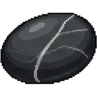
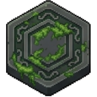
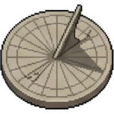
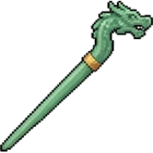

Cracked Teacup
Absorb the first mistake each puzzle (no HP loss).
Take


TIER 2+1 reward slot after each puzzle.
Take
TIER 2+1 item slot capacity.
TakeAbsorb the first mistake each puzzle (no HP loss).
Take